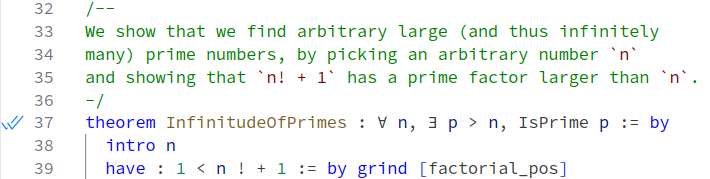

ProofScript — Validating a Lean Proof
Reference home · Grammar: ps-0.9-r2 · Semantic pin: Lean 4.34.0 stable.
Validate the requested statement and its definitions in the intended environment, not simply the theorem name. A proof of a modified predicate can be valid but irrelevant to the approved requirement. Check transitive axioms, incomplete evidence, external models and compiler assumptions separately. Independent checkers and replays strengthen evidence only within their measured scopes.
Compiler and coverage boundary. A checker executable has its own build-trust boundary. Unsigned or signed reports and artifact hashes identify data but do not replace declaration admission.
Inherited detail and attribution. The section below is adapted from the Apache-2.0 Lean reference mirrored at ValidatingProofs/index.html. Source Git blob: 964667e91b2ed531544e96ae7422930f5f6a1298. Its prose, API signatures and native names are retained where they describe the inherited semantics. Selected definition-keyword presentation aliases are recorded separately, not certified by a PSC parser. Native toolchains, intentional errors and historical releases keep their actual identities. The mirror contains rc2 material; the stable pin and stable-delta audit override conflicting claims.
Stable-pin correction: this inherited page mentions
Lean.ofReduceBool,Lean.trustCompiler. These pre-final kernel mechanisms are not part of the selected Lean 4.34.0 stable semantics. Their historical descriptions remain for source coverage, not as authorization to implement those reductions. Native proof tactics require separate assumption/evidence accounting.
Validating a Lean Proof
This section discusses how to validate a proof expressed in Lean.
Depending on the circumstances, additional steps may be recommended to rule out misleading proofs. In particular, it matters a lot whether one is dealing with an honest proof attempt, and needs protection against only benign mistakes, or a possibly-malicious proof attempt that actively tries to mislead.
In particular, we use
honest when the goal is to create a valid proof. This allows for mistakes and bugs in proofs and meta-code (tactics, attributes, commands, etc.), but not for code that clearly only serves to circumvent the system (such as using the debug.skipKernelTC). Note that the unsafe marker on API functions is unrelated to whether this API can be used in an dishonest way.
In contrast, we use malicious to describe code that goes out of its way to trick or mislead the user, exploit bugs or compromise the system. This includes un-reviewed AI-generated proofs and programs.
Furthermore it is important to distinguish the question “does the theorem have a valid proof” from “what does the theorem statement mean”.
Below, an escalating sequence of checks are presented, with instructions on how to perform them, an explanation of what they entail and the mistakes or attacks they guard against.
The Blue Double Check Marks
In regular everyday use of Lean, it suffices to check the blue double check marks next to the theorem statement for assurance that the theorem is proved.
Instructions
While working interactively with Lean, once the theorem is proved, blue double check marks appear in the gutter to the left of the code.

A double blue check mark
Significance
The blue ticks indicate that the theorem statement has been successfully elaborated, according to the syntax and type class instances defined in the current file and its imports, and that the Lean kernel has accepted a proof of that theorem statement that follows from the definitions, theorems and axioms declared in the current file and its imports.
Trust
This check is meaningful if one believes the formal theorem statement corresponds to its intended informal meanings and trusts the authors of the imported libraries to be honest, that they checked that the theorems in their libraries express their intended informal meanings, and that no unsound axioms have been declared and used.
Protection
This check protects against
- Incomplete proof (missing goals, tactic error) of the current theorem
- Explicit use of
sorryin the current theorem - Honest bugs in meta-programs and tactics
- Proofs still being checked in the background
Comments
In the Visual Studio Code extension settings, the symbol can be changed. Editors other than VS Code may have a different indication.
Running lake build+Module, where Module refers to the file containing the theorem, and observing success without error messages or warnings provides the same guarantees.
Printing Axioms
The blue double check marks appear even when there are explicit uses of sorry or incomplete proofs in the dependencies of the theorem. Because both sorry and incomplete proofs are elaborated to axioms, their presence can be detected by listing the axioms that a proof relies on.
Instructions
Write #print axioms thmName after the theorem declaration, with thmName replaced by the name of the theorem and check that it reports only the built-in axioms propext, Classical.choice, and Quot.sound.
Significance
This command prints the set of axioms used by the theorem and the theorems it depends on. The three axioms above are standard axioms of Lean's logic, and benign.
- If
sorryAxis reported, then this theorem or one of its dependencies usessorryor is otherwise incomplete. - If
Lean.trustCompileris reported, then native evaluation is used; see below for a discussion. - Any other axiom means that a custom axiom was declared and used, and the theorem is only valid relative to the soundness of these axioms.
Trust
This check is meaningful if one believes the formal theorem statement corresponds to its intended informal meanings and one trusts the authors of the imported libraries to be honest.
Protection
(In addition to the list above)
- Incomplete proofs
- Explicit use of
sorry - Custom axioms
Re-Checking Proofs with lean4checker
There is a small class of bugs and some dishonest ways of presenting proofs that can be caught by re-checking the proofs that are stored in .olean files when building the project.
Instructions
Build your project using lake build, run lean4checker --fresh on the module that contains the theorem of interest, and check that no error is reported.
Significance
The lean4checker tool reads the declarations and proofs as they are stored by lean during building (the .olean files), and replays them through the kernel. It trusts that the .olean files are structurally correct.
Trust
This check is meaningful if one believes the formal theorem statement corresponds to its intended informal meanings and believes the authors of the imported libraries to not be very cunningly malicious, and to neither compromise the user’s system nor use Lean’s extensibility to change the interpretation of the theorem statement.
Protection
(In addition to the list above)
- Bugs in Lean’s core handling of the kernel’s state (e.g. due to parallel proof processing, or import handling)
- Meta-programs or tactics intentionally bypassing that state (e.g. using low-level functionality to add unchecked theorems)
Comments
Since lean4checker reads the .olean files without validating their format, this check is prone to an attacker crafting invalid .olean files (e.g. invalid pointers, invalid data in strings).
Lean tactics and other meta-code can perform arbitrary actions when run. Importing libraries created by a determined malicious attacker and building them without further protection can compromise the user's system, after which no further meaningful checks are possible.
We recommend running lean4checker as part of CI for the additional protection against bugs in Lean's handling of declaration and as a deterrent against simple attacks. The lean-action GitHub Action provides this functionality by setting lean4checker: true.
Without the --fresh flag the tool can be instructed to only check some modules, and assume others to be correct (e.g. trusted libraries), for faster processing.
Gold Standard: comparator and external checkers
To protect against a seriously malicious proof compromising how Lean interprets a theorem statement or the user's system, additional steps are necessary. This should only be necessary for high risk scenarios (proof marketplaces, high-reward proof competitions, unaligned AI).
Instructions
In a trusted environment, write the theorem statement (the “challenge”), and then feed the challenge as well as the proposed proof to the comparator tool, with external checkers enabled, as documented there.
Significance
Comparator will build the proof in a sandboxed environment, to protect against malicious code in the build step. The proof term is exported to a serialized format. Outside the sandbox and out of the reach of possibly malicious code, it validates the exported format, replays the proofs using both Lean's kernel and/or an external checker and also ensures that the proved theorem statements match those in the trusted challenge file.
Trust
This check is meaningful if the theorem statement in the trusted challenge file is correct and the sandbox used to build the possibly-malicious code is safe.
Protection
(In addition to the list above)
- Actively malicious proofs
- Implementation bugs present in some (but not simulatenously in all) of the used checkers.
Comments
At the time of writing, comparator supports using the official Lean kernel and the external checker nanoda, which is developed independently and implemented in Rust. The Lean Kernel Arena features more external checkers that can be used manually for even more confidence.
Remaining Issues
When following the gold standard of checking proofs using comparator, some assumptions remain:
The soundness of Lean’s logic.
The plumbing provided by the
comparatortool is correct.The sandbox used by
comparatoris secure.There is no implementation bug affecting all of the used checkers simultaneously.
No human error or misleading presentation of the theorem statement in the trusted challenge file.
If there are doubts that the theorem means what it appears to mean, its statement and all referenced definitions must be investigated carefully, in particular with regard to custom notation and type classes. Some external checkers offer raw pretty-printing capabilities that are not affected by changes to parser or notation in the source file.
On Lean.trustCompiler (up to Lean 4.28.0)
Lean supports proofs by native evaluation. This is used by the decide+native tactic or internally by specific tactics (bv_decide in particular) and produces proof terms that call compiled Lean code to do a calculation that is then trusted by the kernel.
Specific uses wrapped in honest tactics (e.g. bv_decide) are generally trustworthy. The trusted code base is larger (it includes Lean's compilation toolchain and library annotations in the standard library), but still fixed and vetted.
General use (decide+native or direct use of Lean.ofReduceBool) can be used to create invalid proofs whenever the native evaluation of a term disagrees with the kernel's evaluation. In particular, for every implemented_by/extern attribute in libraries it becomes part of the trusted code base that the replacement is semantically equivalent.
All these uses show up as an axiom Lean.trustCompiler in #print axioms. External checkers (lean4checker, comparator) cannot check such proofs, as they do not have access to the Lean compiler. When that level of checking is needed, proofs have to avoid using native evaluation.
Since Lean 4.29.0, the decide+native and bv_decide tactics no longer use Lean.trustCompiler, but instead introduce one dedicated axiom for each computation that is asserted by native computation. The Lean.trustCompiler machinery is deprecated and will eventually be removed.
Preserved native diagnostic displays
These are inherited explanatory/output displays, not additional source programs or newly executed results.
Display 1
'thmName' does not depend on any axioms